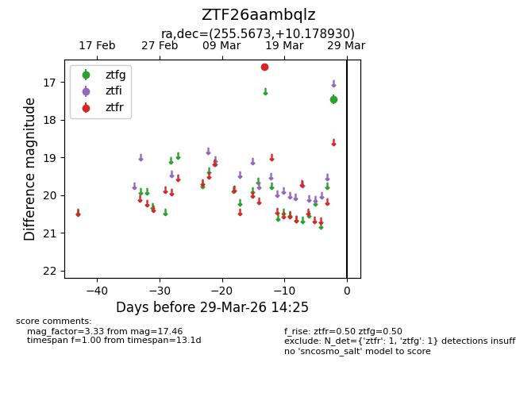
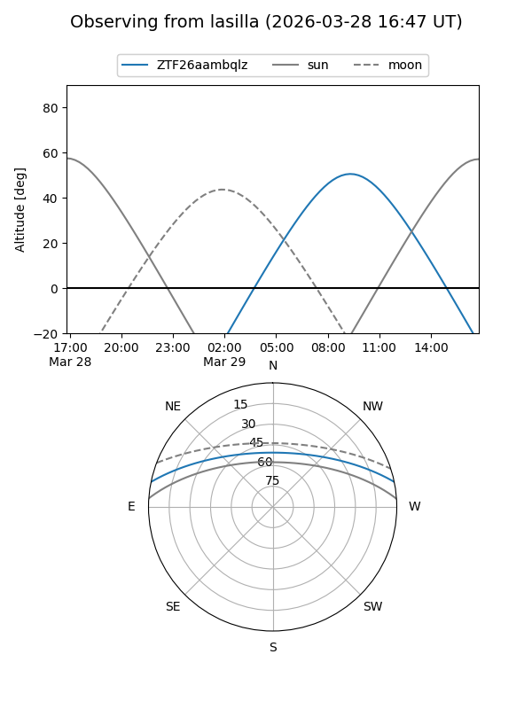
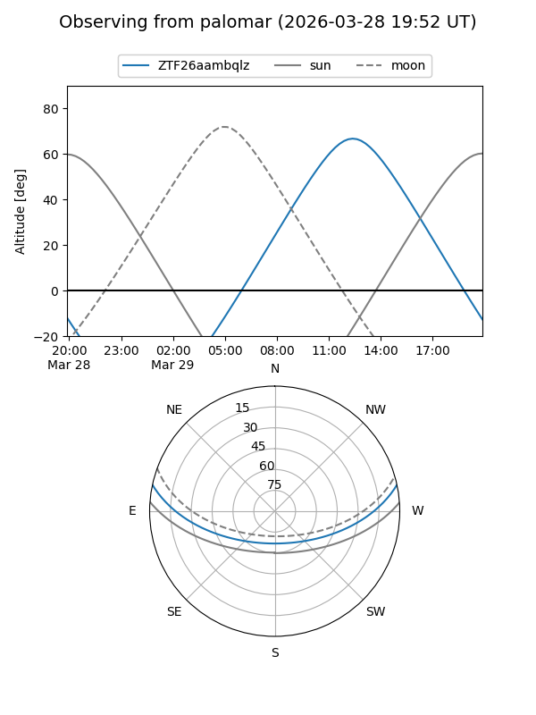

ZTF26aambqlz
Target ZTF26aambqlz at 2026-03-29 14:28
Aliases and brokers:
FINK: link
Lasair: link
ALeRCE: link
alt names
ZTF26aambqlz (ztf,fink_ztf)
Coordinates:
equatorial (ra, dec) = 255.5673,+10.17893
equatorial (HMS+DMS) = 17:02:16.15,+10:10:44.15
galactic (l, b) = (29.7576,+28.83211)
Flags:
Photometry:
last ztfg=17.46, ztfr=16.61
1 ztfg, 1 ztfr detections
Lightcurve

Visibility


Additional plots